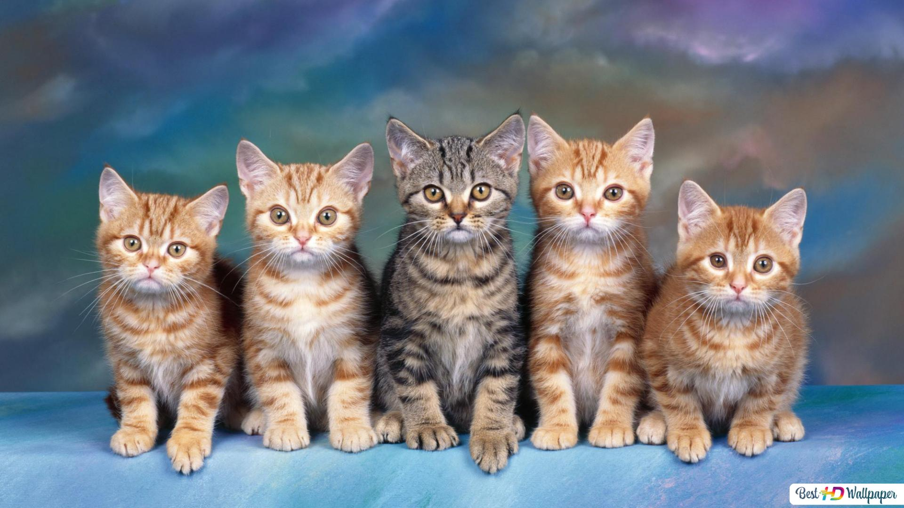
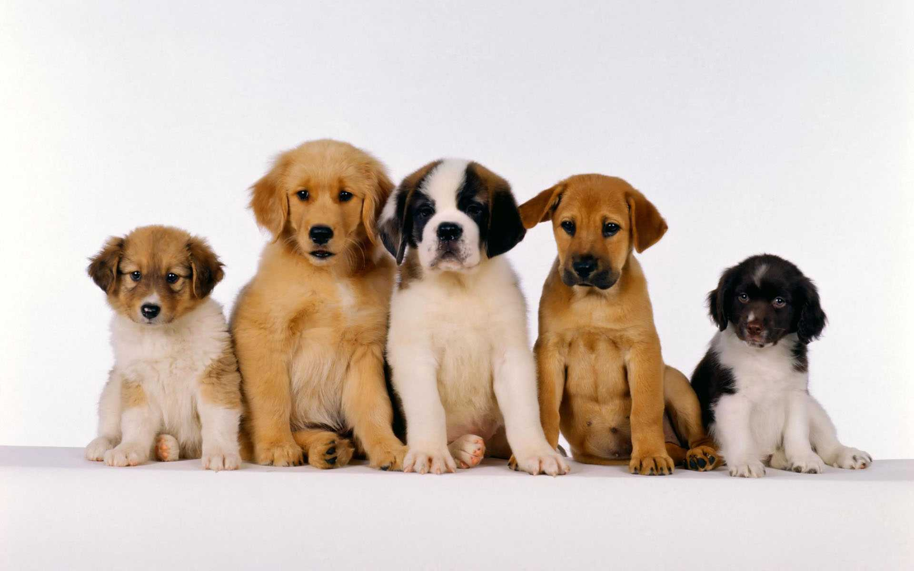
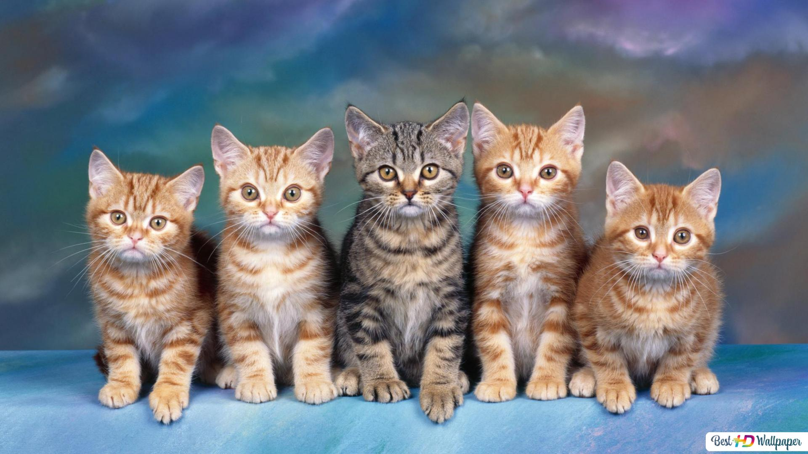
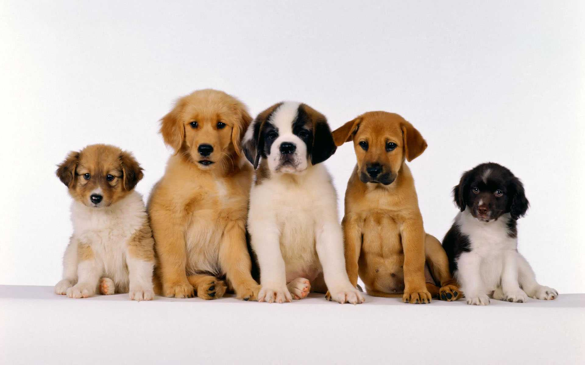

¡Bienvenidxs a la página web del Refugio Patitas!
Esta fue una página hecha para la actividad de promotorxs de BA Multiplica. La temática es de un refugio de animales de especies variadas. Esta misma pestaña cuenta con distintas imágenes ilustrativas, un mapa para simular la locación del refugio y una sección con los integrantes del refugio (los cuales son traidos con un fetch del json "animalitos.json"). En la pestaña Nuestro Refugio, en cambio, hay integradas dos secciones: una con texto e imágenes (que si se toca el botón se activa una animación que le cambia de color a la imagen) y otra con una simulación de e-commerce (los productos y sus características vienen del json "alimentos.json", así como también hay una especie de carrito que sólo actualiza el contador al apretar "Comprar").
 


